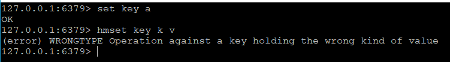
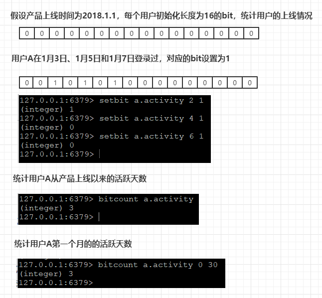
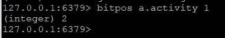
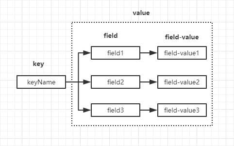
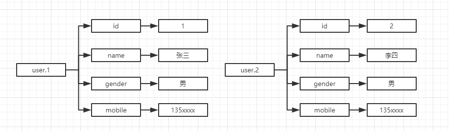
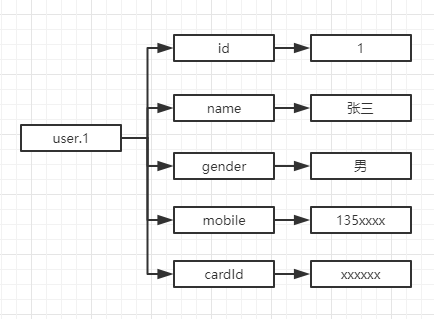

redis的数据类型有五种，分别是
- 字符串
- 散列（哈希）
- 列表
- 集合
- 有序集合
redis也是一种基于内存的数据库，五种数据类型的共同之处是数据都以Key-Value键值对保存，对于习惯了Java的程序员来说，Map的Key和Value可以自定义，value还可以嵌套Map/List/Set，比如Map<String,Object> m，Object可以是任意的数据类型，但是这种在redis中是不允许的，key只能是一个类型，例如字符串的Key如果存入的value为散列数据，那么redis会抛出一个错误

说明这个key已经存入了其他数据类型的value。接下来逐个介绍各种数据类型。
字符串
字符串是reids最基本的数据类型，可以存储图片、字符、Json格式化的对象，一个字符串类型允许存储的大小最大512MB（已经很大了，内存可是很宝贵的！）
常用命令
（斜体表示形式参数，[]表示可选参数）
| 命令 | 功能 | 复杂度 | 可选参数 | 说明 |
|---|---|---|---|---|
| set key value [p] | 保存key-value | O(1) | ex second px millisecond nx xx |
设置过期时间为秒 设置过期时间为毫秒 key不存在时，才执行set key存在时，才执行set |
| get key | 读取key的value | O(1) | key不存在，返回(nil) | |
| incr key | 整数递增 | O(1) | key不存在，创建，value先初始化为0，然后+1 key不是数字，抛出异常 key为数字，+1且返回递增后的值 |
|
| incrby key increment | 按 increment递增 | O(1) | 与incr相似 increment>0，增加数值 increment<0，减少数值 返回值为计算后的结果 |
|
| decr key | 整数递减 | O(1) | key不存在，创建，value先初始化为0，然后-1 key不是整数，抛出异常 key为整数，-1且返回递减后的值 |
|
| decrby key increment | 按 increment递减 | O(1) | 与decrby相似 increment>0，减少数值 increment<0，增加数值 返回值为计算后的结果 |
|
| incrbyfloat key increment | 增加指定浮点值 | O(1) | increment如果是整数，效果等同于incrby 增量可以用科学计数法表示，如3e5,4e-2 increment>0，减少数值 increment<0，增加数值返回值为计算后的结果 |
|
| append key value | 尾部追加 | O(1) | 如果key不存在，等同于set key value，否则追加value，返回追加后的长度 | |
| strlen key | 计算value字符串长度 | O(1) | 如果key不存在，返回0 对于中文或其他字符，按照实际utf-8的编码长度返回，如“你好”，返回的长度是6 |
|
| mset key… | 批量设置key-value | O(N) | 操作多个key时，是一个原子操作 如果成功，则所有key都同时设置 |
|
| mget key… | 批量获取key-value | O(N) | 如果给定的key不存在，返回nil | |
| setbit key offset value | 设置偏移量上的bit | O(1) | value只能是0或1 当key不存在时，自动生成一个新的字符串，扩容时，非填充的位置以0填充offser的值在[0,2^32)之间 |
|
| getbit key offset | 获取偏移量上的bit | O(1) | 如果offset大于字符串的长度，或者key不存在，返回0 | |
| bitcount key [start] [end] | 统计bit被设置为1的数量 | O(N) | start end |
起始位置 结束位置 |
| bitop [op] destkey key… | 对key进行位操作结果保存到destkey上 | O(N) | and or xor not |
逻辑且 逻辑或 逻辑异或 逻辑非 |
| bitpos key bit [start] [end] | 返回第一个被设置为1或0的bit位 | O(N) | start end |
起始位置 结束位置 |
应用实例
以上字符串命令在项目中会经常使用，关于bit的相关操作，很有必要掌握，确实解决了很多业务和性能问题。最常遇到的应该是统计用户活跃度问题，举个例子，产品要求统计上线以来，每个用户的活跃度曲线，我们要做的就是两件事，
- 统计每个用户的活跃天数，具体的访问日期
- 根据维度、粒度绘制曲线图

这种统计方式与关系型数据库相比，性能更高，也不用写复杂的SQL，取得数据后就是绘制曲线图，这不是本文的重点，就不详述了。如果有其他的统计需求，比如用户A第一次使用产品或某个日期区间内第一次使用产品的日期，可以使用bitpos命令，

散列（哈希）
散列也是以kv结构存储，与Java的Map很像，但是它的value只能是字符串，也就是无法像Map那样可以嵌套。散列的存储结构可以简单的用下图表示

常用命令
| 命令 | 功能 | 复杂度 | 说明 |
|---|---|---|---|
| hset key field value | 设置key中的field值为value | O(1) | 如果field不存在且value设置成功，返回1 如果field已存在，新值将覆盖旧值，返回0 |
| hget key field | 获取key中指定域的值 | O(1) | |
| hmset key field value [field value…] | 设置一个或多个field-value对 | O(N) | 如果filed已存在，将会覆盖 |
| hmget key field… | 获取key中一个或多个域的值 | O(N) | key不存在，返回nilfield不存在，返回nil |
| hgetall key | 获取key所有域和值 | O(N) | |
| hexists key field | 判断field是否存在 | O(1) | 如果field存在，返回1 如果field不存在，或key不存在，返回0 |
| hsetnx key field value | 当且仅当field不存在时，赋值为value | O(1) | 如果field存在，不执行赋值操作 如果key不存在，相当于创建key并赋值field |
| hincrby key field increment | 让key中的field按increment递增 | O(1) | field的value不是数字，报错 increment>0，增加数值 increment<0，减少数值 以上返回值为计算后的结果 |
| hincrbyfloat key field increment | 让key中的field按increment浮点数递增 | O(1) | 同hincrby |
| hdel key field… | 删除key的一个或多个field | O(N) | 返回成功删除field的个数 |
| hkeys key | 只获取key的所有field | O(N) | 包含所有field的表当key不存在时，返回一个空表 |
| hvals key | 只获取key的所有field的值 | O(N) | 包含所有value的表当key不存在时，返回一个空表 |
| hlen key | 返回field的数量 | O(1) | key不存在时，返回0 |
应用实例
有了散列数据类型，当作为数据库时，一个用户的属性包含id，姓名，性别，联系电话，在关系型数据库的表结构可以表示为
| Id | name | gender | mobile |
|---|---|---|---|
| 1 | 张三 | 男 | 135xxxxxx |
| 2 | 李四 | 男 | 135xxxxxx |
用redis的散列可以表示为

假如要增加一个属性驾驶证号码，这个属性只针对id=1的数据有效，对于其他数据是冗余的，那么只能对表结构进行修改，增加一个字段
| Id | name | gender | mobile | cardId |
|---|---|---|---|---|
| 1 | 张三 | 男 | 135xxxxxx | xxxxxx |
| 2 | 李四 | 男 | 135xxxxxx | null |
redis的散列结构不需要这么做，它的存储结构都是独立的，可以自由的增减field，不影响其他field

列表
列表类型可以存储一个有序的字符串列表，支持双端操作，底层的实现是双向链表，所以两端添加元素时性能很高，越接近两端的元素越快，但是随机访问的性能就比较差，这跟Java的链表很相似。
常用命令
| 命令 | 功能 | 复杂度 | 说明 |
|---|---|---|---|
| lpush key value… | 将一个或多个value插入key列表的表头 | O(1) | 返回列表的长度 |
| rpush key value… | 将一个或多个value插入key列表的表尾 | O(1) | 返回列表的长度 |
| lpop key | 移除并返回key列表的头元素 | O(1) | 返回列表的头元素 当key不存在时，返回nil |
| rpop key | 移除并返回key列表的尾元素 | O(1) | 返回列表的尾元素 当key不存在时，返回nil |
| llen key | 返回列表的长度 | O(1) | 如果key不存在，返回0 如果key不是列表类型，报错 |
| lrange key start end | 返回列表key中起始和结束区间内的元素 | O(S+N) | start end以0为底，可以>0也可以<0 为0时表示最左边第一个元素 1表示最左边第二个元素 -1表示最右边第一个元素 -2表示最右边第二个元素，依此类推 start end的区间为闭区间，包含start和end下标的元素 如果start>列表最大下标，返回空列表 如果end>列表的最大下标，则返回到最右边的元素 |
| lrem key count value | 移除列表中与value相等的元素 | O(N) | count>0，从表头开始向表尾遍历 删除与value相等的元素，数量为count count<0，从表尾开始向表头遍历 删除与value相等的元素，数量为count的绝对值 count=0，删除所有表中与value相等的元素 |
| lindex key index | 返回列表中下标为index的元素 | O(N) | index>0，列表从表头开始遍历第index个元素 index<0，列表从表尾开始遍历第index个元素 |
| lset key index value | 将下标为index的元素值设置为value | O(N) | index>0，列表从表头开始遍历第index个元素 index<0，列表从表尾开始遍历第index个元素 |
| linsert key Before/After pivot value | 将value插入列表中插入pivot之前或之后 | O(N) | 在列表中不存在pivot值时，不执行操作 key不存在时，不执行操作 |
| rpoplpush src dest | 将列表src的表尾元素弹出插入列表dest的表头 | O(1) | 弹出的元素会作为返回值返回 如果src不存在，返回nil，不执行其他操作 如果dest不存在，创建dest列表 如果src和dest相同，等同于将表尾元素移到表头 |
集合
集合与列表有一些相似之处，也很容易区分，集合的元素是不可重复的，与Java的HashSet类似，也是无序的。
常用命令
| 命令 | 功能 | 复杂度 | 可选参数 | 说明 |
|---|---|---|---|---|
| sadd key member… | 将一个或多个member元素加入到集合key中 | O(N) | 如果key不存在，自动创建 已存在与集合的member元素将被忽略 成功则返回加入的元素数量（忽略的元素不计算在内） |
|
| srem key member… | 将一个或多个member元素删除 | O(N) | 返回成功移除的元素数量 | |
| smembers key | 返回集合key中的所有元素 | O(N) | key不存在，返回空集合 | |
| sismember key member | 判断元素member是否在集合key中 | O(1) | 如果member元素在集合key中，返回1 如果key不存在或member元素不在集合key中，返回0 |
|
| sdiff key… | 差集运算 | O(N) | 当key不存在，视为空集合返回差集集合 | |
| sidffstore dest key… | 差集运算，将结果保存到dest中 | O(N) | dest如果已存在，将其覆盖 dest可以是key自身返回结果集中的元素数量 |
|
| sinter key… | 交集运算 | O(N*M) | 当key不存在，视为空集合 返回交集集合 |
|
| sinterstore dest key… | 交集运算，将结果保存到dest中 | O(N*M) | dest如果已存在，将其覆盖 dest可以是key自身返回结果集中的元素数量 |
|
| sunion key… | 并集运算 | O(N) | 当key不存在，视为空集合 返回并集集合 |
|
| sunionstore dest key… | 并集运算，将结果保存到dest中 | O(N) | dest如果已存在，将其覆盖 dest可以是key自身返回结果集中的元素数量 |
|
| scard key | 获取集合key的元素数量 | O(1) | 返回集合个数，当key不存在时，返回0 | |
| srandmember key | 随机获取集合key中的一个或多个元素（取决于count的大小） | O(1)O(N) | count | 当0<count<集合size，返回count个不重复的元素 当count>=集合size，返回整个集合 当count<0，返回count个可能重复的元素 当key不存在，未提供count参数，返回nil 当key不存在，提供count参数，返回空集合 |
| spop key | 删除并返回集合中的一个随机元素 | O(1) | 返回被移除的随机元素 当key不存在或key是空集合，返回nil |
|
| smove src dest member | 将member元素从src集合移动到dest集合 | O(1) | 当src不存在或member元素不在src中，不执行任何操作， 当dest中已包含member元素，该操作仅将src的member元素删除 如果member元素在src中且被成功移除，返回1 如果member元素不是src集合成员，并且没有对dest执行操作返回0 |
有序集合
有序集合与集合的区别就在于它是有序的，在集合的基础上，有序集合中的元素多了一个score属性，使得有序集合可以基于score进行排序等与数值有关的操作，有序集合和列表也有些相似，以下是列表、集合、有序集合三者的比较
| 列表 | 集合 | 有序集合 | |
|---|---|---|---|
| 是否有序 | ✔ | x | ✔ |
| 是否唯一 | x | ✔ | ✔ |
| 底层实现 | 链表 | 散列表 | 散列表和跳表 |
有序集合与列表的差异还在于：
- 列表访问两端的元素很快，元素越多，访问中间的元素越慢，有序集合基于散列表和跳表实现，读取中间部门的数据也很快
- 列表无法简单的调整元素的位置，有序集合可以
常用命令
| 命令 | 功能 | 复杂度 | 可选参数 | 说明 |
|---|---|---|---|---|
| zadd key score member [score member …] | 将一个或多个member元素及其score加入有序集合key中 | O(M*log(N)) | 当member元素已存在有序集合中将更新score值和元素的位置 如果key不存在，创建一个有序集合并执行插入操作 返回成功添加的元素数量（不包含已存在的元素） |
|
| zscore key member | 获得元素的score | O(1) | 如果key不存在或member元素不在有序集合key中，返回nil | |
| zrange key start stop [withscores] | 获取有序集合key中，指定区间内的元素 | O(log(N)+M) | withscores | 按照score从小到大的顺序返回索引从start到stop之间的所有元素 如果start或stop大于0，表示从前向后查找 如果start或stop小于0，表示从后向前查找 -1表示最后一个与元素 可选参数withscores表示一起返回元素和score值 例如元素1，score1，元素2，score2… |
| zrevrange key start stop [withscores] | 获取有序集合key中，指定区间内的元素 | O(log(N)+M) | withscores | 与zrange不同的是，zrevrange是按照从大到小的顺序来排列 |
| zrangebyscore key min max [withscores] [limit offset count] | 获取有序集合 key 中，所有 score 值介于 min 和max 之间(包括等于 min 或 max )的元素。 | O(log(N)+M) | withscores limit offset count |
有序集合元素按 score 值递增(从小到大)次序排列 withscores参数会将score一起返回，limit参数指定返回结果的数量和区间，类似sql的 select limit offset count min，max在默认情况下的取值为闭区间也可以通过加(符号来使用开区间 |
| zincrby key increment member | 为一个元素的score值加上增量increment | O(log(N)) | 返回元素新的score值 当key不存在，或member不在有序集合key中时，等同于zadd key score member 当increment>0，增加score 当increment<0，减少score |
|
| zcard key | 获取有序集合key中元素的数量 | O(1) | 返回有序集合元素个数 当key不存在时，返回0 |
|
| zcount key min max | 获取有序集合key中，score值在min和max之间（包括等于min或max）的元素数量 | O(log(N)+M) | 返回score值在min和max之间的元素数量 | |
| zrem key member … | 删除有序集合key中一个或多个member元素 | O(M*log(N)) | 如果member不存在，忽略 否则返回成功删除的元素数量（不包含忽略的元素） |
|
| zremrangebyrank key start stop | 删除有序集合key中指定排名(rank)区间内(包含start和stop)的所有元素 | O(log(N)+M) | 有序集合按照score从小到大排序 删除start和stop区间内（包含start和stop）的元素 当start或stop>0，表示从前向后查找 当start或stop<0，表示从后向前查找 |
|
| zremrangebyscore key min max | 删除有序集合key中，指定score区间内的所有元素 | O(log(N)+M) | 有序集合按照score从小到大排序，删除score区间在min和max之间的元素 默认情况下，删除的元素包含等于min或max的元素，可以使用(符号表示开区间 |
|
| zrank key member | 获取member元素在有序集合key中从小到大排序后的索引 | O(log(N)) | score值最小的索引为0 | |
| zrevrank key member | 获取member元素在有序集合key中从大到小排序后的索引 | O(log(N)) | score值最大的索引为0 | |
| zinterstore dest numkeys key …[weights weight…][aggregate sum/min/max] | 计算给定的一个或多个有序集合的交集 其中给定 key 的数量必须以 numkeys 参数指定，并将该交集(结果集)储存到 dest |
O(NK)+O(Mlog(M)) | weights aggregate |
weights，设置每个集合的权重，参与计算时元素要乘上该集合的权重 aggregate默认取值为sum，计算每个元素score的和 设置为min时，计算每个元素的最小score值 设置为max时，计算每个元素的最大score值 |
| zunionstore dest numkeys key …[weights weight…][aggregate sum/min/max] | 计算给定的一个或多个有序集合的并集 其中给定 key 的数量必须以 numkeys 参数指定，并将该并集(结果集)储存到 dest |
O(N)+O(Mlog(M)) | weights aggregate |
同zinterstore命令 |